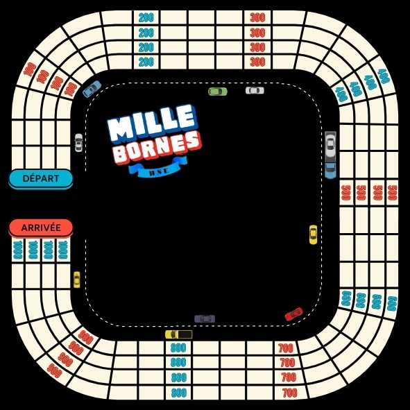

SEMESTRE 5
Voici la liste des SAE que j'ai pu réaliser
lors du Semestre 5 du BUT HSE.
SAÉ 5.01 : : Conduire une démarche intégrée d'analyse et de maîtrise des risques PTE dans une ICPE. Avec l'aide de mon groupe, j'ai réalisé une version alternative du jeu "Mille Bornes" afin de prévenir les travailleurs d'une entreprise automobile par rapport à certains risques. Réaliser ce serious game nous a permit de le tester dans une entreprise automobile et d'en voir les résulats : les travailleurs étaient beaucoup plus informés grâce aux quizz que l'on a intégré au jeu.
SAÉ 5.02 : Concevoir un Plan de Continuité d'Activité en lien avec un risque naturel Cette SAE rejoint de ce que je peux faire en entreprise. Ce projet m'a permit de réaliser un Plan de Continuité d'Activité pour mon entreprise Alméa. Plus spécifiquement sur les risques de mouvement de terrain et d'inondation. Pour cela j'ai pu m'aider de documents comme le DDRM, le DICRIM de Châlons-En-Champagne ou encore le PPRN.